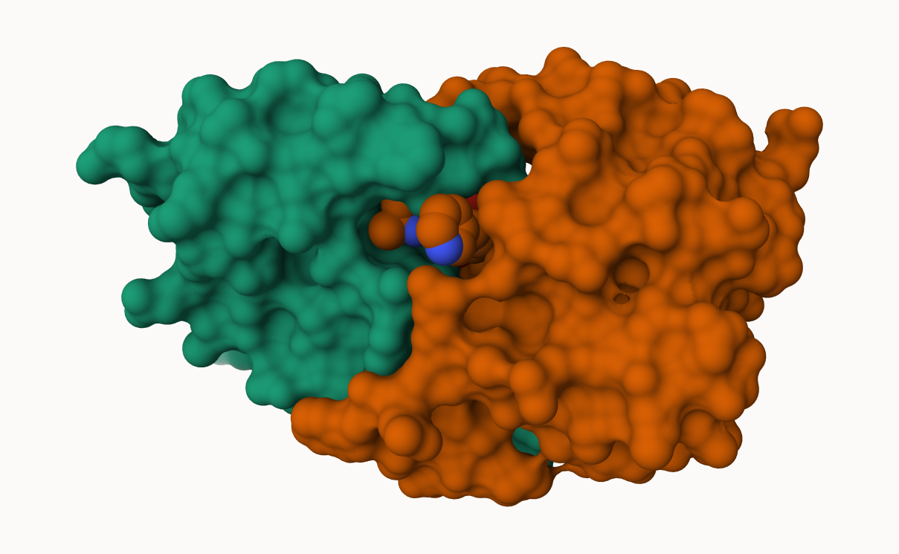

Rows: 6 Columns: 9
── Column specification ────────────────────────────────────────────────────────
Delimiter: ","
chr (1): Molecular Type
dbl (4): Integrative, Multiple methods, Neutron, Other
num (4): X-ray, EM, NMR, Total
ℹ Use `spec()` to retrieve the full column specification for this data.
ℹ Specify the column types or set `show_col_types = FALSE` to quiet this message.
We can use the Molsat viewer online: https://molstar.org/viewer/

My first image of HIV-Pr with surface dis;ay showing ligand binding
A new clean image showing the catalytic ASP25 amino aicds in both chains of the HIV-PR dimer along with the inhibitor and the all important active site water.
Bio3D package for structural bioinformatics
library(bio3d)pdb <-read.pdb("1hsg")
Note: Accessing on-line PDB file
pdb
Call: read.pdb(file = "1hsg")
Total Models#: 1
Total Atoms#: 1686, XYZs#: 5058 Chains#: 2 (values: A B)
Protein Atoms#: 1514 (residues/Calpha atoms#: 198)
Nucleic acid Atoms#: 0 (residues/phosphate atoms#: 0)
Non-protein/nucleic Atoms#: 172 (residues: 128)
Non-protein/nucleic resid values: [ HOH (127), MK1 (1) ]
Protein sequence:
PQITLWQRPLVTIKIGGQLKEALLDTGADDTVLEEMSLPGRWKPKMIGGIGGFIKVRQYD
QILIEICGHKAIGTVLVGPTPVNIIGRNLLTQIGCTLNFPQITLWQRPLVTIKIGGQLKE
ALLDTGADDTVLEEMSLPGRWKPKMIGGIGGFIKVRQYDQILIEICGHKAIGTVLVGPTP
VNIIGRNLLTQIGCTLNF
+ attr: atom, xyz, seqres, helix, sheet,
calpha, remark, call
head(pdb$atom)
type eleno elety alt resid chain resno insert x y z o b
1 ATOM 1 N <NA> PRO A 1 <NA> 29.361 39.686 5.862 1 38.10
2 ATOM 2 CA <NA> PRO A 1 <NA> 30.307 38.663 5.319 1 40.62
3 ATOM 3 C <NA> PRO A 1 <NA> 29.760 38.071 4.022 1 42.64
4 ATOM 4 O <NA> PRO A 1 <NA> 28.600 38.302 3.676 1 43.40
5 ATOM 5 CB <NA> PRO A 1 <NA> 30.508 37.541 6.342 1 37.87
6 ATOM 6 CG <NA> PRO A 1 <NA> 29.296 37.591 7.162 1 38.40
segid elesy charge
1 <NA> N <NA>
2 <NA> C <NA>
3 <NA> C <NA>
4 <NA> O <NA>
5 <NA> C <NA>
6 <NA> C <NA>
Q4: Water molecules normally have 3 atoms. Why do we see just one atom per water molecule in this structure?
Hydrogen atoms are too small to produce strong electron density in X‑ray crystallography, so they usually aren’t visible in the resulting structure. Because of this, PDB files typically record only the oxygen atom for each water molecule.
Q5: There is a critical “conserved” water molecule in the binding site. Can you identify this water molecule? What residue number does this water molecule have
The residue number that the water molecule have is 308.
Q6: Generate and save a figure clearly showing the two distinct chains of HIV-protease along with the ligand. You might also consider showing the catalytic residues ASP 25 in each chain and the critical water (we recommend “Ball & Stick” for these side-chains). Add this figure to your Quarto document.
install.packages("png")
The downloaded binary packages are in
/var/folders/r6/txgsh4vn1mv5vx1b0tgmyw6c0000gn/T//RtmppHcKc0/downloaded_packages